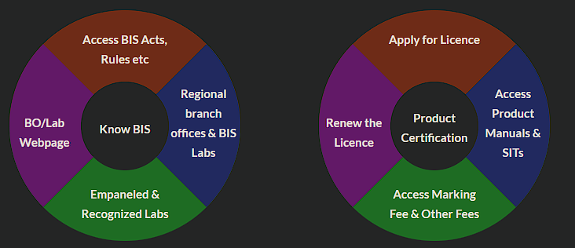
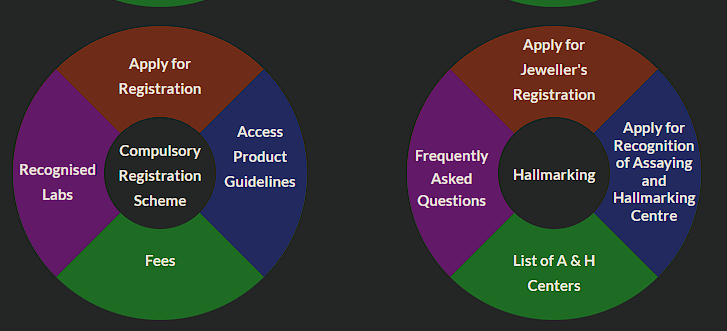
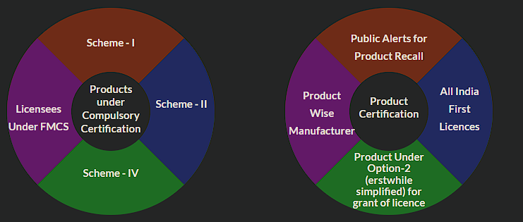

ABOUT
The Bureau of Indian Standards (BIS) is the national standards body of India, responsible for formulating and promoting standards for products and services to ensure quality, safety, and efficiency. It plays a crucial role in the certification process, ensuring compliance with national standards, thereby protecting consumer interests and enhancing the competitiveness of Indian industries.
KEY FUNCTIONS
Standardization:
Setting Indian Standards (IS) across sectorsCertification Marks:
ISI Mark, ECO Mark, and HallmarkProduct Testing:
Quality assurance through BIS-recognized laboratoriesConsumer Protection:
Complaint resolution and quality monitoringApplications
- Quality Standards
- Consumer Safety
- Product Certification
- Standardization
- Quality Control
- Jewelry
Graph Images


